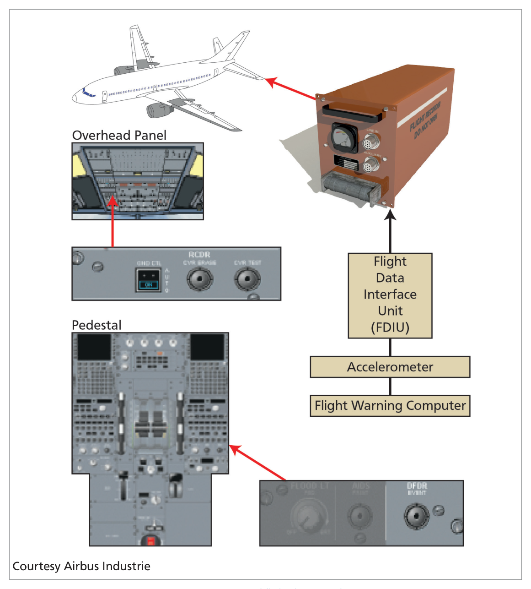
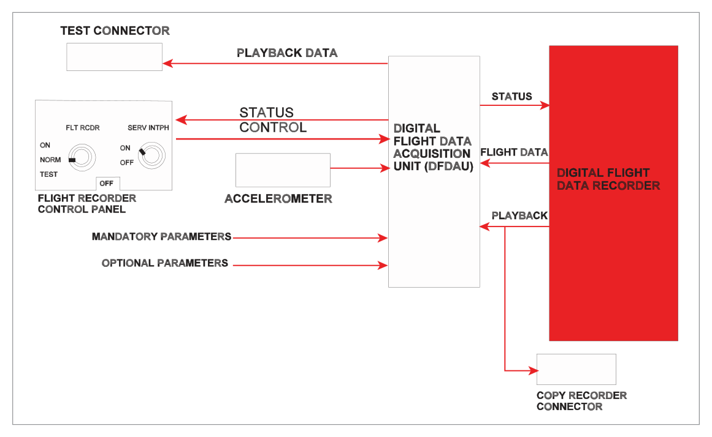

What this section covers: The purpose, function, and operational context of the Flight Data Recorder (FDR) on commercial aircraft.
Commercial aircraft carry a Flight Data Recorder (FDR), which records various aircraft parameters throughout the entire duration of every flight. The FDR has two main functions:
Primary function: Preserve aircraft data to determine the cause of any aircraft accident (accident investigation).
Secondary function: Gather information for trend analysis and trouble-shooting of aircraft systems.
On smaller aircraft, the FDR may be combined with the Cockpit Voice Recorder (CVR) into a single unit.
Exam Tip: Remember the two functions — accident investigation (primary) and trend analysis/maintenance (secondary). The DGCA may ask which is the "main" function.
2. FDR Designs
What this section covers: Physical design, storage medium, housing, and location of the FDR unit.
The FDR records the last 10 or 25 hours of aircraft data (depending on MTOM — see regulations) on a digital storage device. Key physical characteristics:
Feature
Detail
Housing
Shock-resistant box
Colour
Painted red (commonly called "black box")
Location
Rear of the aircraft, normally under the fin
Front fitting
Underwater Locating Device (ULD)
Exam Tip: The FDR is painted red (not black). The nickname "black box" is colloquial and does not reflect the actual colour. Locate it at the rear of the aircraft under the fin — this is the area least likely to be destroyed in a crash.
3. FDR Components
What this section covers: The four main components of the FDR system, the Data Interface and Acquisition Unit (DIAU), and the control units.
The FDR system consists of four main components:
A recording system
A control unit on the overhead panel
A control unit on the pedestal
A Data Interface and Acquisition Unit (DIAU)
The DIAU collects inputs from aircraft systems including: air conditioning, auto-flight, flight controls, fuel, landing gear, navigation systems, pneumatic systems, APU, and engines. This information is sent to the Aeroplane Condition Monitoring System (ACMS) and is used for system monitoring, trend analysis, and can be downloaded via the aircraft printer, ACARS, or the ATSU.
Overhead Panel Control Unit — GND CTL Switch
This control unit also controls the CVR. It has a spring-loaded switch labelled GND CTL with two positions:
Position
Function
ON
CVR and DFDR are energized immediately; ON light is illuminated
AUTO
CVR and DFDR energize: on the ground with one engine running, OR in flight (engine running or stopped)
Pedestal Control Unit — EVENT Button
A push-button labelled 'EVENT' sets an event mark on the DFDR recording. This acts as a bookmark to enable rapid location of a specific event during subsequent analysis.

Fig 36.1 — Digital Flight Data Recorder (source p.498)
AUTO Switch Logic: When GND CTL is set to AUTO, the FDR/CVR system will energize automatically whenever at least one engine is running (whether on the ground or in the air), or whenever the aircraft is airborne. It will automatically stop 5 minutes after the final engine shutdown.

Fig 36.2 — Digital FDR System (Boeing 767) block diagram (source p.499)
Quick Revision Summary — Section 3: FDR has 4 components (recording system, 2 control units, DIAU). GND CTL ON = immediate power. GND CTL AUTO = starts on first engine start, stops 5 min after last engine shutdown. EVENT button = bookmark on recording.
4. Aircraft Integrated Data Systems (AIDS)
What this section covers: How AIDS complements the FDR for maintenance monitoring and data transmission.
AIDS processes data from various aircraft systems to ease maintenance tasks. Key components:
flowchart TD
A[Aircraft Systems Air Cond / Autoflight / Engines / Fuel etc.] --> B[Data Management Unit DMU]
B --> C[Flight Data Interface Unit FDIU]
B --> D[Separate Flight Maintenance Recorder]
C --> E[FDR Mandatory Parameters]
B --> F[Aircraft Printer In-flight & Ground]
B --> G[ACARS / VHF Data Link Ground Transmission]
D --> H[Printout for Maintenance]
The Data Management Unit (DMU) collects and processes system data to compile reports for storage and printing. Some mandatory flight parameters are sent via the Flight Data Interface Unit (FDIU) to the FDR. The remainder is recorded on a separate flight maintenance recorder.
Data can be transmitted to ground stations via ACARS (Airborne Communications and Reporting System) on a VHF data link, allowing aircraft performance monitoring from the ground at certain intervals.
Exam Tip: ACARS uses a VHF data link for transmitting AIDS data to ground. Know the distinction: FDR records mandatory parameters via FDIU; the maintenance recorder captures the rest.
5. Parameters Recorded
What this section covers: Mandatory and additional parameters recorded, and which aircraft types must record additional parameters.
The mandatory parameters recorded on the FDR depend on the age and size of the aircraft and are specified in OPs Regulations. They fall into two categories:
Mandatory (Main) Parameters
Time or relative time count
Attitude (pitch and roll)
Airspeed
Pressure altitude
Heading
Normal acceleration
Propulsive thrust/power on each engine
Cockpit thrust/power lever position
Flaps/slats configuration or cockpit selection
Ground spoilers and/or speed brake selection
Additional Parameters
(Required for aircraft > 27,000 kg MTOM)
Positions of primary flight controls and trim
Radio altitude and navigation information displayed to flight crew
What this section covers: The three regulatory cases for FDR carriage requirements on EU-registered commercial air transport aircraft, minimum recording times, and additional parameter requirements.
Regulatory Framework — FDR Carriage (EU Commercial Air Transport):
Case
Aircraft Category
Registration Date
Case 1
All aeroplanes > 5,700 kg MTOM, OR turbine-powered with > 9 passenger seats but < 5,700 kg MTOM
Registered since 1 April 1998
Case 2
All aeroplanes > 5,700 kg MTOM
Registered since 1 June 1990
Case 3
All turbine-powered aeroplanes > 5,700 kg MTOM
Registered before1 June 1990
Minimum Recording Times
Aircraft Category
Minimum Recording Time
MTOM > 5,700 kg
25 hours — all mandatory (main) parameters required
MTOM ≤ 5,700 kg (turbine, > 9 seats, registered after 1 Apr 1998)
10 hours
MTOM > 27,000 kg
25 hours + additional parameters mandatory
Exam Tip: The key thresholds are 5,700 kg and 27,000 kg MTOM. Recording times are 25 hours (above 5,700 kg) or 10 hours (below 5,700 kg with >9 seats). Additional parameters only required above 27,000 kg.
7. Other Regulatory Requirements
What this section covers: FDR operational requirements, combined FDR/CVR rules, and dispatch with inoperative FDR.
Operational Requirements:
The FDR must start automatically before the aircraft is capable of moving under its own power (i.e., from first engine start).
The FDR must stop automatically 5 minutes after the last engine is shut down (aircraft no longer capable of self-propelled movement).
The FDR must have a device to assist in locating the recorder in water (Underwater Locating Device — ULD).
Aeroplanes ≤ 5,700 kg MTOM may carry a combined FDR/CVR.
Aircraft > 5,700 kg MTOM must have 2 recorders: either separate FDR/CVR, or two combined units.
Dispatch with Inoperative FDR
An aeroplane may be dispatched with an inoperative FDR only if ALL of the following conditions are met:
It is not reasonably practicable to repair or replace the FDR before flight.
The aeroplane does not exceed 8 further consecutive flights.
Not more than 72 hours have elapsed since the unserviceability was discovered.
Any CVR required to be carried is operative (unless it is combined with the FDR).
flowchart TD
A[FDR Unserviceable] --> B{Practicable to repair before flight?}
B -- Yes --> C[Repair/Replace FDR before departure]
B -- No --> D{Check all 3 conditions}
D --> E[≤ 8 consecutive flights since u/s?]
D --> F[≤ 72 hours since u/s discovered?]
D --> G[CVR serviceable? unless combined]
E -- All YES --> H[MAY dispatch with u/s FDR]
F -- All YES --> H
G -- All YES --> H
E -- Any NO --> I[CANNOT dispatch Must repair first]
Quick Revision Summary — Ch. 36:
FDR = last 10 or 25 hours of data. Red box. Rear of aircraft. Has ULD.
Starts: first engine start. Stops: 5 min after last engine shutdown.
Note: The source text for Chapter 36 contains no dedicated question set. The following questions are instructor-generated in DGCA CPL/ATPL style, based entirely on the content of this chapter.
Q1.The primary function of the Flight Data Recorder (FDR) is to:
Monitor engine trend data and assist in planned maintenance
Preserve aircraft data to determine the cause of an aircraft accident
Transmit real-time data to ground stations via ACARS
Record cockpit voice communications and ambient sound
Correct Answer: (b) Preserve aircraft data to determine the cause of an aircraft accident
Explanation: The Oxford text states explicitly: "The main function of the flight data recorder (FDR) is to preserve the aircraft data in order to determine the cause of any aircraft accident." Trend analysis and troubleshooting are secondary functions. See Section 1.
Why the other options are wrong:
(a) — Engine trend monitoring is a secondary function (maintenance), not the primary purpose.
(c) — ACARS transmission is a function of AIDS/DMU, not the FDR itself.
(d) — Recording cockpit voice is the function of the CVR, not the FDR.
Instructor's Note: Examiners often present (a) as a trap because trend analysis is indeed a function of the FDR — but it is secondary, not primary. Always anchor on "accident investigation."
Q2.What is the minimum recording time for an FDR fitted to a turbine-powered aeroplane with an MTOM of 6,500 kg, registered in 1995?
10 hours
2 hours
25 hours
30 minutes
Correct Answer: (c) 25 hours
Explanation: This aircraft is 6,500 kg MTOM — above the 5,700 kg threshold. For aircraft above 5,700 kg MTOM, the minimum recording time is 25 hours. The registration date (1995 = after 1 June 1990) places it in Case 2. See Section 6.
Why the other options are wrong:
(a) — 10 hours applies to aircraft below 5,700 kg MTOM (turbine, >9 seats, registered after 1 Apr 1998).
(b) — 2 hours is the CVR recording time for large aircraft, not the FDR.
(d) — 30 minutes is the minimum CVR recording time, not applicable to FDRs.
Instructor's Note: Always check MTOM first. Above 5,700 kg = 25 hours. Below 5,700 kg (turbine, >9 seats, post-April 1998) = 10 hours. These are the only two FDR recording time thresholds.
Q3.An FDR is found unserviceable before flight. Under which conditions may the aircraft be dispatched without a serviceable FDR?
If the CVR is operative, within 8 consecutive flights, and within 72 hours of discovering the unserviceability
If both FDR and CVR are inoperative, within 10 flights, and within 48 hours
At captain's discretion, provided the flight is under 1 hour in duration
Only with specific authority from the regulatory authority for each individual flight
Correct Answer: (a) If the CVR is operative, within 8 consecutive flights, and within 72 hours of discovering the unserviceability
Explanation: The regulations allow dispatch with an inoperative FDR provided: (1) it is not reasonably practicable to repair before flight, (2) no more than 8 further consecutive flights, (3) not more than 72 hours since the unserviceability, and (4) the CVR is operative. All four conditions must be met. See Section 7.
Why the other options are wrong:
(b) — The CVR must be operative (not inoperative); the limit is 8 flights (not 10) and 72 hours (not 48).
(c) — Flight duration is irrelevant; there is no captain's discretion clause for FDR inoperability.
(d) — No individual regulatory authority approval is required for each flight; the conditions are self-contained in the regulations.
Instructor's Note: Remember: 8 flights and 72 hours — the same limits apply to CVR dispatch with an unserviceable CVR. The logic is: if FDR is u/s, the CVR must be serviceable to still capture some record of events.
Q4.An aircraft with MTOM of 35,000 kg must record which of the following sets of parameters on its FDR?
Main parameters only (time, attitude, airspeed, pressure altitude, heading, etc.)
Main parameters plus additional parameters (flight controls, radio altitude, cockpit warnings, landing gear)
Cockpit voice communications and aural environment only
Engine parameters and fuel flow only, as it is above 27,000 kg
Correct Answer: (b) Main parameters plus additional parameters
Explanation: Aircraft with MTOM above 27,000 kg must record both the main mandatory parameters AND the additional parameters (positions of primary flight controls and trim, radio altitude and navigation info displayed to crew, cockpit warnings, and landing gear position). At 35,000 kg this aircraft clearly exceeds the 27,000 kg threshold. See Section 5 and Section 6.
Why the other options are wrong:
(a) — Main parameters only is insufficient; additional parameters become mandatory above 27,000 kg.
(c) — Voice/aural recording is the CVR's function, not the FDR.
(d) — Engine and fuel parameters are part of the mandatory main parameters, but the threshold of 27,000 kg triggers additional parameters, not a replacement set.
Instructor's Note: The two MTOM thresholds to memorise: >5,700 kg = FDR required, 25-hour recording; >27,000 kg = additional parameters also required.
Q5.When must the FDR automatically stop recording?
Immediately when the last engine is shut down
When the aircraft's weight-on-wheels switch activates on landing
5 minutes after the last engine is shut down
When the parking brake is set and all engines are stopped
Correct Answer: (c) 5 minutes after the last engine is shut down
Explanation: The regulation states the FDR must stop automatically after the aircraft is incapable of moving under its own power. In practice, this is achieved by automatically switching off 5 minutes after the last engine is shut down. This 5-minute buffer ensures post-shutdown data is captured. See Section 7.
Why the other options are wrong:
(a) — Immediate shutdown would lose important post-shutdown data; the 5-minute delay is intentional.
(b) — Weight-on-wheels switch relates to other systems; FDR stop is engine-shutdown-referenced.
(d) — Parking brake state is not the trigger; engine shutdown time is.
Instructor's Note: The 5-minute stop delay appears in both FDR and CVR regulations. This is the same delay referenced in the GND CTL AUTO switch logic. Consistent value — easy to remember.
Q6.The EVENT push-button on the FDR pedestal control unit serves to:
Erase the last 30 seconds of FDR data in an emergency
Activate the underwater locating device
Place a bookmark/event mark on the FDR recording to aid subsequent analysis
Switch the FDR from automatic to manual recording mode
Correct Answer: (c) Place a bookmark/event mark on the FDR recording to aid subsequent analysis
Explanation: The EVENT push-button "sets an event mark on the DFDR recording. This acts as a kind of bookmark to enable the 'event' to be found rapidly on the recording at a subsequent analysis." See Section 3.
Why the other options are wrong:
(a) — There is no erase function on the pedestal; erasure is not a feature of the FDR (only CVR has an erase function, with multiple safeguards).
(b) — The ULD is a passive device activated by water immersion, not by a cockpit button.
(d) — The FDR has no "manual" vs "automatic" mode distinction at the pedestal; the GND CTL switch on the overhead panel manages recording state.
Instructor's Note: The EVENT button is a crew-annotation tool — it does not erase, trigger, or alter recordings. It simply flags a point in time for investigators or analysts to examine.
Master Reference Tables
Numerical Values — Quick Reference
Parameter
Value
Reference
FDR recording time (MTOM >5,700 kg)
25 hours
Section 6
FDR recording time (MTOM ≤5,700 kg, turbine, >9 seats, post Apr 1998)